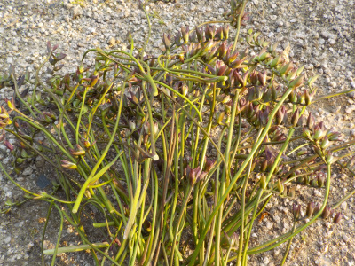
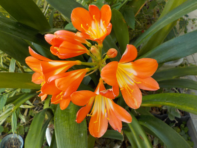
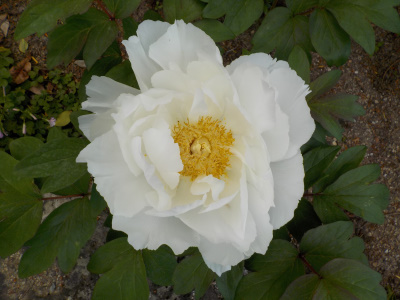
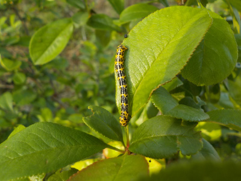

遊びで植物を育てよう
2020/05/04
フリージアの花を摘みました。

花がすっかり終わってしまったので、花芽を摘みました。
なんだか寂しいですね。
種を作らないで球根を太らすってことですが、球根が大きくなることはいいことなのかな？
大きいと花が重さで倒れてしまうんじゃないかってなんとなく思いました。
【5月TOP】
【日記TOP】
【園芸TOP】
2020/05/04
暖かくなるとオレンジ色の花が合いますね。

クンシランが咲きました。
派手ですね。
大きいので場所をとるのが困りますね。
【5月TOP】
【日記TOP】
【園芸TOP】
2020/05/04
ちょうどいいボタンがありました。

ボタンは終わったものが多いですが、ちょうど見頃のがありました。
まだ木が小さいので開花が遅かったのかもしれません。
連休中はのんびり見れる時間が多いので、このタイミングで咲くといいですね。
【5月TOP】
【日記TOP】
【園芸TOP】
2020/05/04
暖かくなったので嫌な虫が発生です。

これから木の下を歩くときは注意したいと思いました。
【5月TOP】
【日記TOP】
【園芸TOP】
過去の日記
【2024年5月の日記】
【2023年5月の日記】
【2022年5月の日記】
【2021年5月の日記】
【2020年5月の日記】
【2019年5月の日記】
【2018年5月の日記】
【2017年5月の日記】
【2016年5月の日記】
【2015年5月の日記】
【2014年5月の日記】
【2013年5月の日記】
【5月TOP】
【日記TOP】
【園芸TOP】
畑仕事じゃないよ。
【おいしいものを食べよう。】【しっかり寝よう。】
【ソロ活をしよう!】【季節感のあることをしよう。】【動画視聴はほどほどに。】【当サイトの全てのコンテンツは無断転載禁止です。】